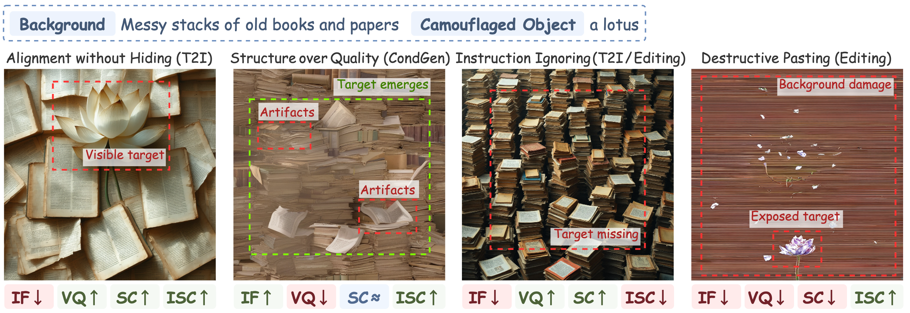
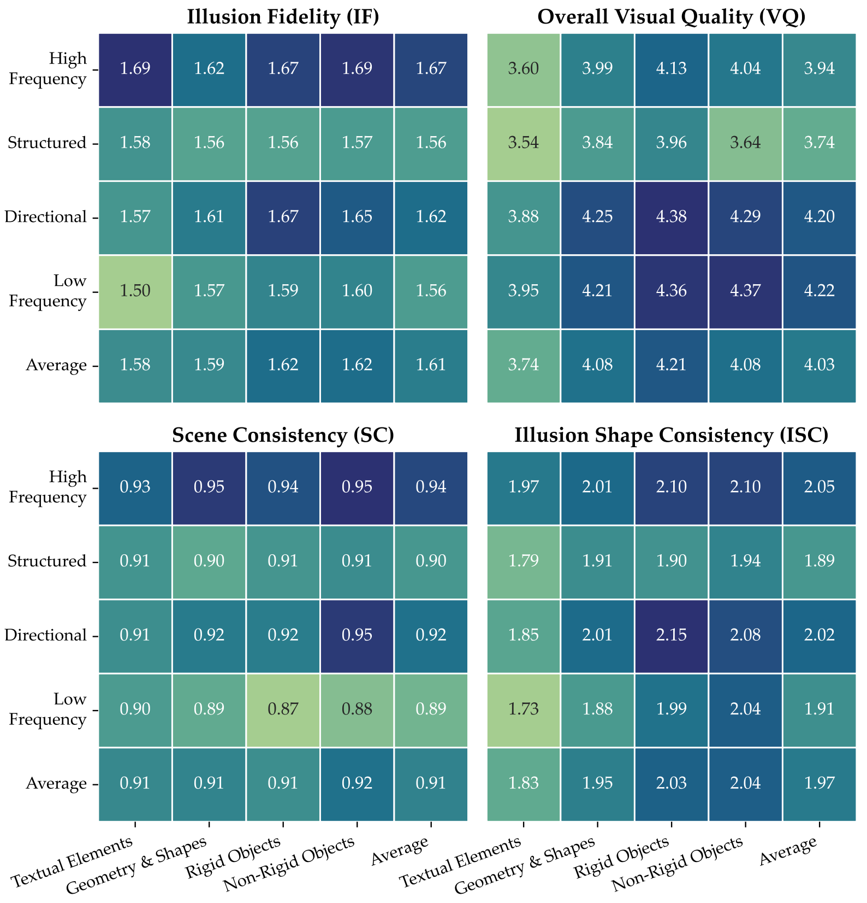
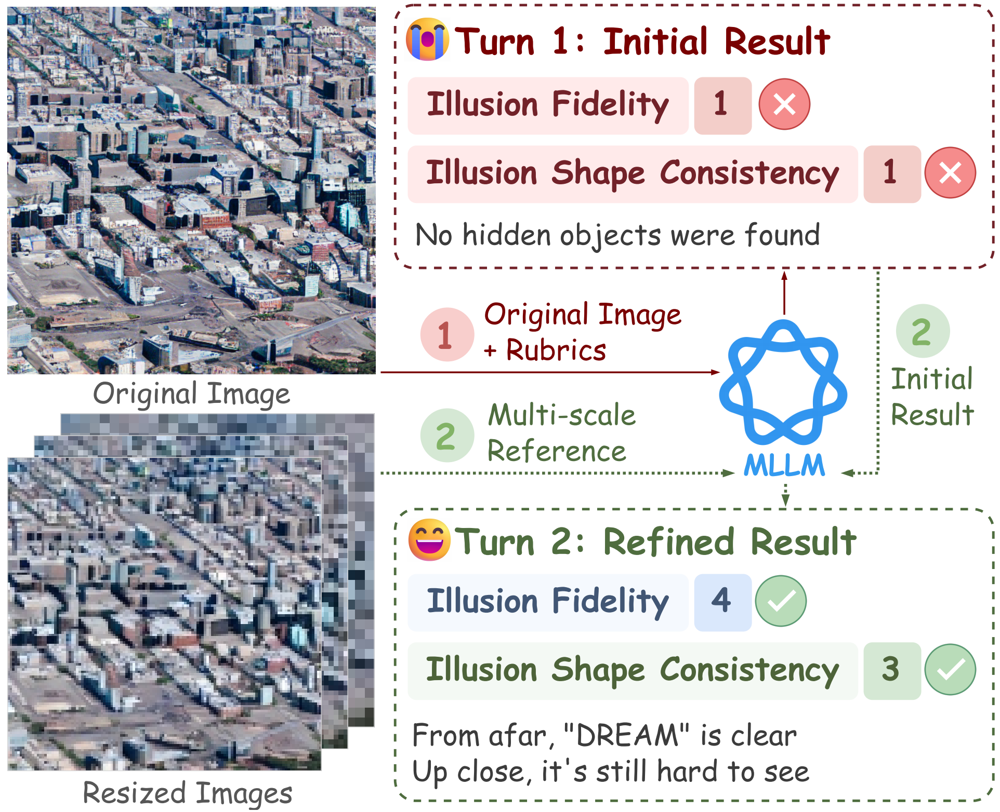
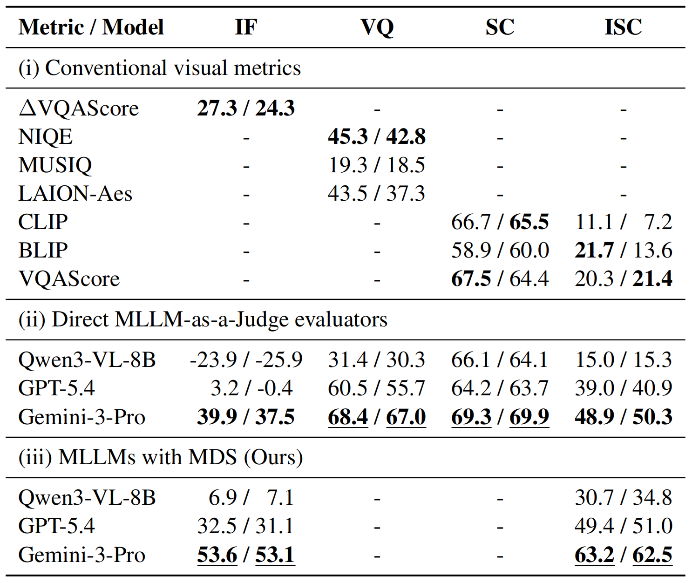
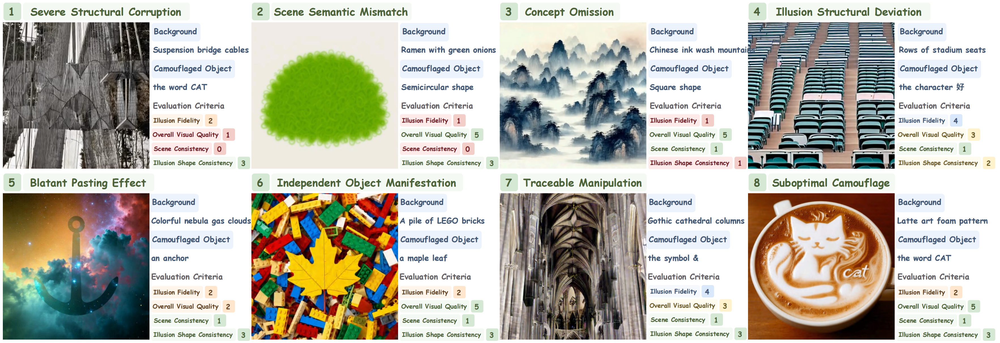

A camouflage visual illusion conceals objects within background textures until they are viewed under specific conditions.
Background: | Hidden Object:
Abstract
Visual generative models have demonstrated impressive capabilities in synthesizing high-quality images from multimodal inputs. However, their ability to generate camouflaged visual illusions, concealing objects within background textures until viewed under specific conditions, remains underexplored. To fill this gap, we propose a novel benchmark for camouflaged visual illusion generation (CamoBench). Specifically, we construct a dataset of 512 samples and use 35 models to produce such illusions across three paradigms: (i) text-to-image, (ii) instruction-based image editing, and (iii) image-conditioned generation. A panel of human experts then evaluates 13,824 generated images across four key dimensions, with a primary focus on illusion fidelity and shape consistency. Through five research questions, our analysis reveals the capability boundaries of existing models. Moreover, we explore Multi-scale Distance Simulation (MDS), an automated baseline based on multimodal large language models to assess illusion effectiveness by simulating human viewing distances. Overall, this study establishes a reliable benchmark to facilitate and evaluate future progress.
Overview
CamoBench is designed to facilitate research on camouflaged visual illusion generation. It provides a high-quality benchmark, model-generated samples, task-specific evaluation dimensions, human scores, and an automated evaluation baseline. This task is closely related to applications such as human-specific CAPTCHAs, visual design, advertising, digital entertainment, and cognitive training. It also serves as a stringent testbed for visual generative models. We provide partial data (test data, a subset of model-generated images, and corresponding human scores). The full dataset will be released upon paper acceptance.
Dataset Examples & Statistics
Results and Analysis

Representative outputs for the same background-object pair across generation paradigms. In-image annotations highlight paradigm-specific visual behaviors and trade-offs.
Inter / Intra Paradigm Variations
- Instruction Ignoring or Alignment without Hiding (T2I). Diffusion Transformers better balance concealment and visual quality than U-Nets.
- Instruction Ignoring or Destructive Pasting (Editing). Editing models tend to either under-edit or over-edit.
- Structure over Quality (CondGen). QR Code Monster outperforms other control mechanisms.
- Stronger foundation models improve camouflage synthesis.
- Overall, no paradigm fully resolves the task.

Attribute Influence Analysis
- High-Frequency textures maximize concealment, while Directional textures better balance it with image quality.
- Low-Frequency textures leave objects exposed, while Structured textures introduce visual artifacts.
- Abstract shapes are harder to hide than physical objects.
- Directional textures paired with Rigid or Non-Rigid Objects perform best, while Structured textures paired with Textual Elements or Geometry & Shapes perform worst.
- Camouflage success depends on background-object fit.
Overall performance across 16 combinations of background textures and hidden object categories, averaged across all evaluated models.
Automated Evaluation Alignment

Overview of the MDS strategy. It uses a two-turn evaluation: first judging the original image, then refining the score with downsampled views that simulate distant observation.

Correlation (PLCC / SRCC, % ↑) between automated scores and human judgments. Bold indicates the best result within each group, and underlining indicates the best result overall.
- Conventional visual metrics perform adequately on explicit dimensions but struggle with illusion-specific dimensions.
- Direct MLLM-as-a-Judge evaluators improve overall correlation but still yield low alignment on IF and ISC.
- MDS consistently improves MLLM correlations on both IF and ISC, offering a baseline for automated illusion evaluation.
Error Examples

Case studies on errors observed in CamoBench. We present one illustrative example for each of the eight major error types. We sort these errors in descending order of severity, from Type 1 (indicating the most serious errors) to Type 8 (indicating the least serious errors). We also provide human scores on each dimension for reference.
Type 1: Severe Structural Corruption. The image contains unrecognizable content or severe geometric distortion, e.g., distorted suspension bridge cables (Case 1).
Type 2: Scene Semantic Mismatch. Generated background conflicts with the text prompt, e.g., failing to depict “ramen with green onions” (Case 2).
Type 3: Concept Omission. Model ignores instruction, yielding an image without hidden objects, e.g., failing to generate the “square shape” (Case 3).
Type 4: Illusion Structural Deviation. The hidden target is generated with an inaccurate or distorted structure, e.g., the character deviating from the target outline (Case 4).
Type 5: Blatant Pasting Effect. The hidden target lacks visual blending, appearing as a pasted foreground element, e.g., the anchor directly overlaid on the background (Case 5).
Type 6: Independent Object Manifestation. The model renders the hidden object as an independent physical entity rather than integrating it into the background, e.g., a standalone maple leaf placed on the LEGO bricks (Case 6).
Type 7: Traceable Manipulation. The background exhibits artificial traces arranged to form the target outline, e.g., unnatural shadows on the cathedral columns (Case 7).
Type 8: Suboptimal Camouflage. The hidden object’s outline remains too visible, weakening the camouflage effect, e.g., the distinct cat outline in the latte art (Case 8).
- T2I and Editing paradigms frequently suffer from Concept Omission.
- The CondGen paradigm reduces omission errors but is highly prone to the Blatant Pasting Effect.
- The T2I paradigm often exhibits Independent Object Manifestation.
Conclusion & Contributions
We present CamoBench, the first benchmark for camouflaged visual illusion generation. Our results show that current models struggle with Illusion Fidelity, often exposing, omitting, or crudely pasting hidden objects rather than blending them into backgrounds. With a standardized benchmark, an automated baseline, and analysis, CamoBench lays a foundation for camouflaged visual illusion synthesis, with potential applications such as human-specific CAPTCHAs, marketing and advertising, aesthetic design in fashion, digital entertainment, and cognitive training. It also serves as a stringent testbed for visual generative models.